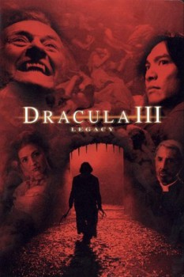

Dracula III: Legacy (2005)


You can't fight it. You can't kill it.

País:Estados Unidos, 86 minutos.
Idiomas:Inglés
GénerosTerror
Director/es:Patrick Lussier
Guionistas:Joel Soisson, Patrick Lussier
Códec de vídeo:Unknown
Número: 1695
TomatoMeter:

--

--
Clasificación IMDb:


4.6/10 (3.5K votos)
Certificación:
Argumento:
Dracula leads vampire hunters Father Uffizi and Luke back to Eastern Europe, and a country plagued by civil war.
Reparto
Jason Scott Lee (Como Father Uffizi), Jason London (Como Luke), Alexandra Wescourt (Como Julia Hughes), Rutger Hauer (Como Dracula), Diane Neal (Como Elizabeth Blaine)
Medio: Archivo de video,
Localización: D:\PELICULAS\SAGAS\Dracula(1.2.3)\Dracula 3 [Legado] [2005]\Dracula Iii Legacy [2005] [1080p].mp4
Prestado: No
Rel. aspecto: Unknown